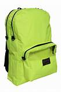

Google lens
VS
MobileNet
start

Output on Google lens -
Output on Mobilnet -
Result - My case study has proven that Google lens is more accurate then Mobile net as ! have tested it with 5 different images and Google lens accurately idnetified each one of them while Mobile Net lacked in between.
 VS MobileNet
VS MobileNet